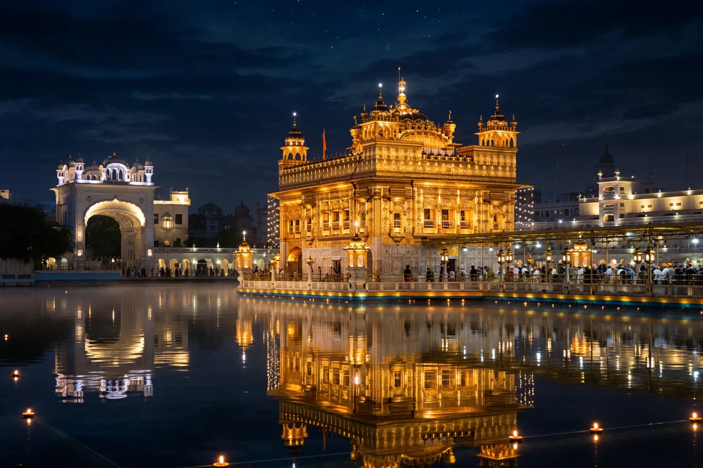

From Wikipedia, the free encyclopedia
| Golden Temple | |
|---|---|
| Location | Amritsar, Punjab, India |
| Religion | Sikhism |
| Founder | Guru Ram Das (city, 1577); temple by Guru Arjan (1589–1604) |
| Style | Sikh architecture with Hindu and Islamic influences |

The Golden Temple, formally Sri Harmandir Sahib ('Abode of God'), is the holiest shrine of Sikhism, standing on an island in the Amrit Sarovar ('Pool of Nectar') at Amritsar. Built by Guru Arjan — who deliberately set it lower than the surrounding city so visitors descend in humility, and open on four sides to welcome all — the present marble-and-gold structure dates largely from the era of Maharaja Ranjit Singh, who covered its upper floors in gilded copper in the 1830s.
The temple houses the Guru Granth Sahib by day and runs the world's largest free kitchen, serving tens of thousands of meals daily. Destroyed repeatedly by Afghan invaders in the 18th century, it was rebuilt each time. In June 1984 Indian Army troops stormed the complex to dislodge militants (Operation Blue Star), killing many and severely damaging the Akal Takht — an event that led to Indira Gandhi's assassination by her Sikh bodyguards and anti-Sikh pogroms, and still shapes Sikh politics.